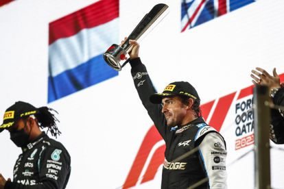

Esteban Ocon ha puesto de manifiesto que Alpine ha mejorado mucho desde que se inició la temporada 2021. En Qatar se vio cómo la escudería francesa daba un paso de gigante para conseguir el quinto puesto en el Campeonato de Constructores. Fernando Alonso logró su primer podio en siete años, mientras que el dorsal '31' concluyó quinto la carrera celebrada en el Circuito Internacional de Losail.
Ahora mismo, Alpine saca 25 puntos a AlphaTauri y sólo quedan dos carreras para el final de la temporada. Y en la general de pilotos Alonso es 10º con 77 puntos (a 15 de Pierre Gasly, que ocupa la novena plaza), mientras que Ocon es 11º con 60.
Esteban Ocon ha puesto de manifiesto que Alpine ha mejorado mucho desde que se inició la temporada 2021. En Qatar se vio cómo la escudería francesa daba un paso de gigante para conseguir el quinto puesto en el Campeonato de Constructores. Fernando Alonso logró su primer podio en siete años, mientras que el dorsal '31' concluyó quinto la carrera celebrada en el Circuito Internacional de Losail. Ahora mismo, Alpine saca 25 puntos a AlphaTauri y sólo quedan dos carreras para el final de la temporada. Y en la general de pilotos Alonso es 10º con 77 puntos (a 15 de Pierre Gasly, que ocupa la novena plaza), mientras que Ocon es 11º con 60. El caso es que el espigado piloto francés, que no olvidemos que este año ganó en Hungría, ha dejado bien patente que el equipo ha experimentado una metamorfosis sensacional. "Se ha producido un progreso enorme. Definitivamente desde principios de año. Tenemos un equipo completamente transformado, un equipo unido y tenemos una gran presión positiva que viene de los jefes. Laurent Rossi y Luca de Meo son tan competidores como nosotros. Y nos apoyan totalmente. Hay muy buenas vibraciones. No existe el estrés negativo dentro del equipo y todos estamos empujando en la misma dirección. Definitivamente es un ambiente perfecto. También estamos usando la estrategia al máximo con Fernando en la pista, haciendo un gran trabajo en equipo. Eso es lo que estamos mostrando en cada trazado. Se ve cómo básicamente es el ambiente dentro del equipo y eso es genial", ha subrayado.
Ocon también habla del Plan. La clave es ser más competitivo el año que viene con el cambio de reglas. Alpine aspira a ser un equipo más competitivo en 2022. "El Plan, como dice Fernando, es hacer que el equipo esté listo para luchar por los podios y ganar más a menudo en el futuro. Por eso nos estamos esforzando tanto en este momento. Todos trabajamos en la misma dirección y el objetivo es seguir así: progresando".
Además, el galo ha elogiado a un Alonso que ha sido capaz de volver a subir al cajón con 40 años. Se ha sumado a los piropos que le ha dedicado también Alain Prost. "Sé cuánto trabaja, cuánta motivación tiene incluso ahora a su edad. La experiencia que atesora y cuánto ha logrado en el deporte. Es más que impresionante. Creo que es una leyenda del deporte. Está entre los mejores: Senna, Schumacher... Y siempre permanecerá ahí. Por lo que estamos haciendo ahora y por cómo veo que piensa en comparación con otros pilotos, lo suyo no tiene precedentes. No hay nadie que piense como él. Estoy contento de ser su compañero de equipo y orgulloso de que luchemos tanto como podamos juntos para lograr nuestro objetivo común", ha sentenciado para cerrar su discurso.